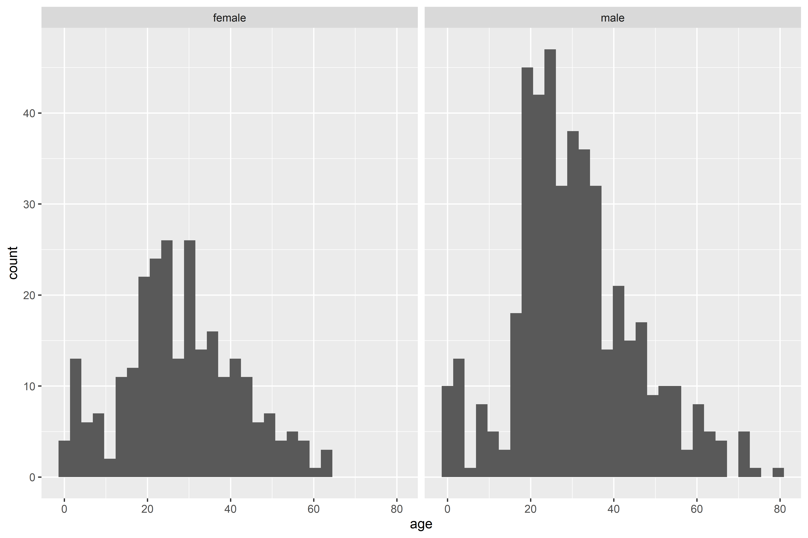
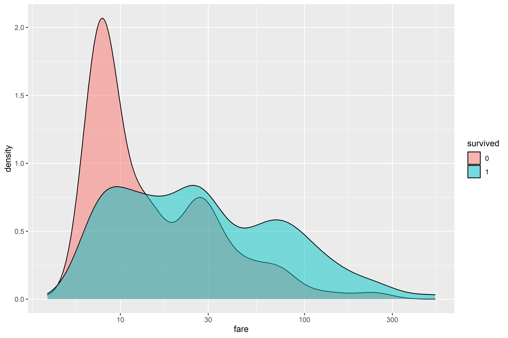
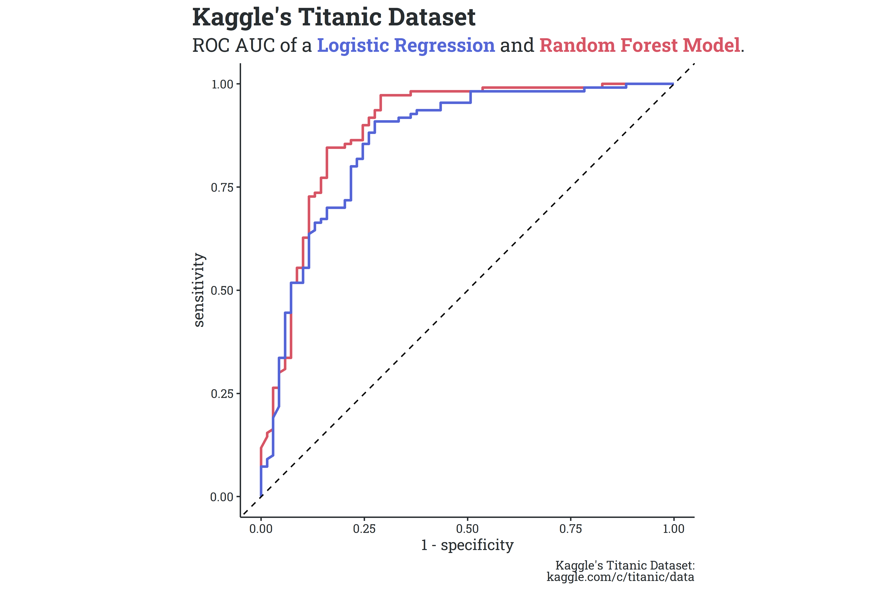

This week, I thought I’d do something a bit different. I’ve been working with & getting used to tidymodels, a suite of R packages for building machine learning models with tidyverse principles (you can thank Julia Silge’s blog for providing a whole host of examples and walkthroughs). Using tidymodels and Kaggle’s Titanic dataset, I created a few simple models to predict whether or not each passenger survived.
First off, it’s important to get to know the dataset in a bit of detail before diving into model building. The Titanic dataset is relatively small, containing 12 columns of data on 891 passengers.
The passenger’s name and ticket number are unique, and don’t offer any much predictive power (at least, not for the type we’ll be deploying), so I’ve removed those columns from the selection. The majority of passengers are missing Cabin information, so I’ve similarly removed that column. Let’s take a look at the age distribution by gender. Density plots are good for this sort of objective, but a quick note - density plots don’t show the counts (like a histogram), just the relative distribution of each group.
Both men and women have similar age distributions, with the majority being adults roughly in their twenties. It’d be interesting to look at which age groups survived.
There’s a spike survivorship at a young age (as expected, due to the prioritization of children). Young adults make up the majority of both survivors and those who died, simply because young adults made up the majority of passengers. It may be more interesting to see which male/female age groups survived.
Interestingly, there’s a large portion of the women who died were children. To gain some more insight, however, it may be beneficial to bin the results. As mentioned above, density plots don’t show a count of each age, but the relative amounts instead. We can use a histogram to get a better idea of the actual amount in each group.

From the histogram, we can see that there were far more male passengers than female passengers. Let’s setup age brackets and see how many of each age group survived.
Despite there being more male passengers, there were more female survivors in just about every age bracket. I had expected that women would have a greater percentage of survivorship, but was mildly surprised that the absolute number of female survivors was greater than the number of male survivors.
Lets look at how survivorship is related to the number of family members each passenger was traveling with.
While there’s not huge variation between survivorship percentages across each class, we can see that the majority of passengers were traveling alone.
Finally, I looked at the distribution of the fare price by survivorship. As expected, passengers who didn’t survive skewed towards low cost fares while survivors were more evenly distributed across fare prices.

Now that we’ve explored the data a bit, we can get started on some actual model fitting and evaluation. I split the dataset into a training set and test set, and built two simple models - a logistic regression and a random forest model. In very light detail, a logistic regression is the most basic classification model based on the generalized linear model and a random forest model is a decision tree-based algorithm. With no tuning applied, neither model performed particularly well - the logistic regression and random forest models had accuracies of 85.5% and 83.8% on the test set, respectively. While the logistic regression had a slightly higher accuracy on the test set, the random forest performed better on the metric of area under the ROC (receiver-operator characteristic) curve - 0.899 compared to 0.888 (generally, binary classification systems with ROC AUC values close to 1 perform better). A comparison between the two ROC curves is shown below.
It’s not perfect, but the purpose was to explore the tidymodels framework, and I’m pretty happy with the outcome/practice along the way.
